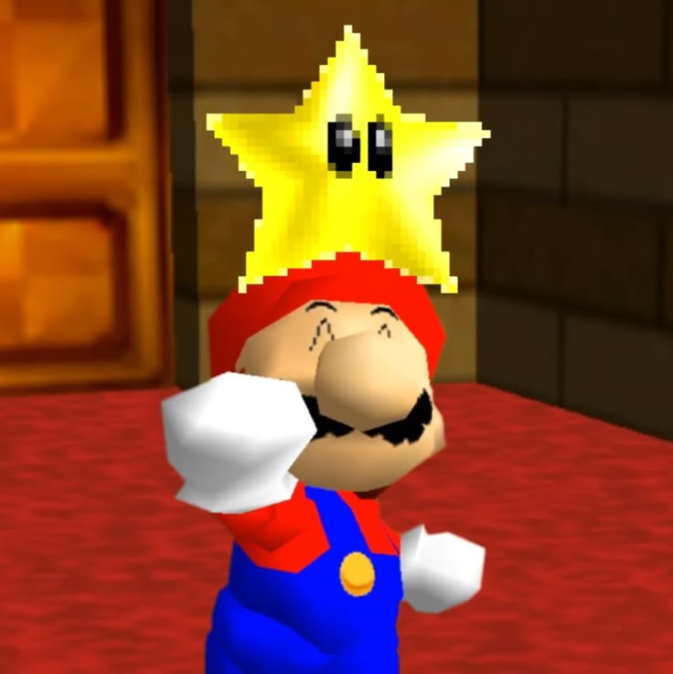

Em Super Mario 64, Mario é convidado pela Princesa Peach ao seu castelo, mas ao chegar, encontra-o dominado por Bowser, que a sequestrou e aprisionou as estrelas do castelo para se proteger. Mario precisa entrar em diferentes mundos, acessados através de pinturas mágicas, para coletar as Estrelas e ganhar acesso a Bowser, a fim de resgatar a Princesa Peach.

Super Mario 64 nasceu do desejo de Shigeru Miyamoto de criar uma experiência Mario em 3D, que surgiu durante o desenvolvimento de Star Fox (1993). O desenvolvimento do jogo, que levou cerca de três anos, focou em testar a mecânica de movimentação de Mario, adaptando o conceito de um mundo 3D. A transição para o 3D foi um desafio que exigiu muito esforço da equipe para tornar a movimentação do personagem intuitiva e agradável, resultando em um jogo revolucionário que definiu o gênero de aventura em 3D.
isso é mario 64 👍